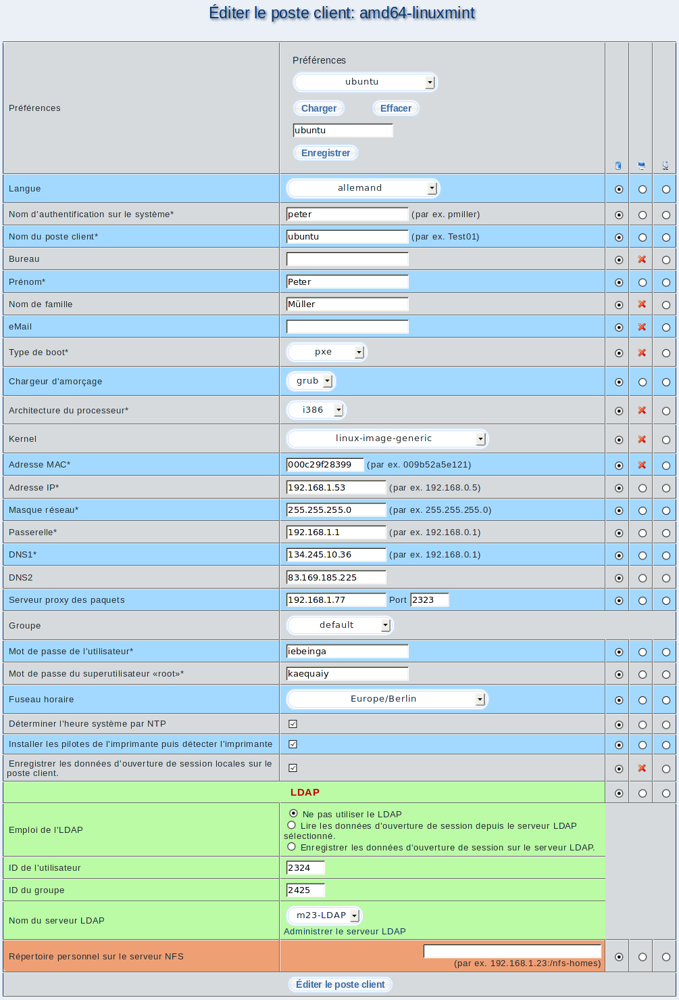

Par ce dialogue, vous pouvez modifier la configuration d'un poste client. Les champs de saisie sont identiques au dialogue d'ajout d'un poste client, complémentés par trois colonnes supplémentaires à l'extrême droite de la page.

- Colonne gauche: Sélectionnez cette colonne si vous désirez conserver la valeur enregistrée sur le poste client et le serveur.
- Colonne au milieu: Les changements doivent être appliqués sur le poste client puis actualisées sur le serveur.
- Colonne droite: Seules les valeurs dans la base de données sur le serveur seront changées. Ceci est utile, lorsque les changements sur le poste client ont déjà étés appliqués manuellement.
Sous-sections
dodger
2014-01-22